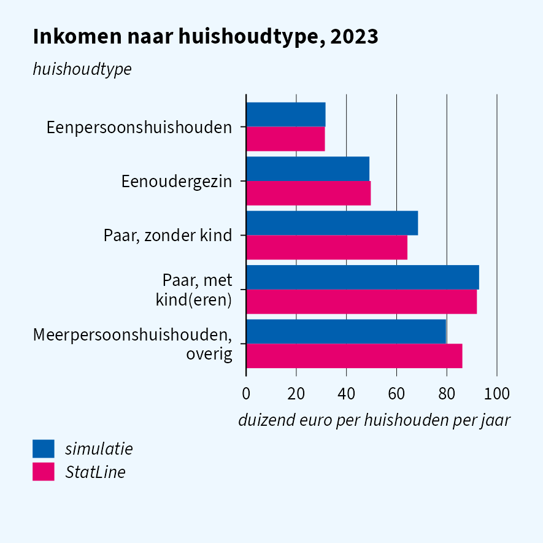

Simulated CBS microdata for R. simregdata reproduces the file names, columns, value labels and join keys of 15 CBS registers, so analysis code written against it runs unchanged on the real data in CBS Remote Access. Distributions are calibrated to CBS StatLine.
Disclaimer. simregdata is independent of CBS (Statistics Netherlands). All data it produces is synthetic and describes no real persons, households, dwellings or businesses. Publish only results computed on the real data, under CBS’s output rules.
Example
library(haven)
library(simregdata) # after haven, so read_sav() is the simulator's
sim_init("woonbase", year = 2023, n = 100000, seed = 42)
pers <- read_sav("WoonbasePopulatiePersonen2023V1",
col_select = c(RINPERSOON, HUISHOUDNR1Jan, VBOWoningType1Jan))
# all datasets share one population, so joins match
sim_init("rdw", year = 2023)
rdw <- read_sav("RDWNPACT2023TABV1")How good is it?
Quality articles run a research question on simulated data and compare the answer with StatLine: cars, household income and energy use.

Datasets
| Topic | Datasets |
|---|---|
| Housing and population | Woonbase (13 files), GBA (3) |
| Vehicles | RDW (2) |
| Work and income | SPOLIS, INPATAB, INHATAB, SECMBUS |
| Wealth and education | VEHTAB, HOOGSTEOPLTAB |
| Businesses | BETAB |
| Energy | Energieverbruik (2), Zonnestroominstallaties |
| Networks | Buren-, Collega- and Familienetwerktab |
The column overview lists every simulated column, and the provenance article where each parameter comes from.
Sources
Calibration parameters come from CBS StatLine open data, © CBS, reused under CC BY 4.0. File structures follow the public variable documentation in the CBS microdata catalogue.